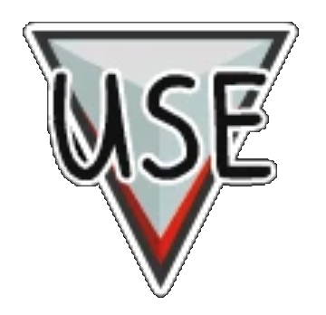

Usar es una habilidad en Among Us, utilizada por Tripulantes, Impostores y Tripulantes Fantasmas.
Esta es la principal habilidad que utilizan
todos los jugadores para interactuar con la mayoría de los objetos del mapa.
Se usa para acceder a tareas, arreglar sabotajes, presionar el Botón de Emergencia y
abrir puertas de Descontaminación, incluso cuando está muerto como Tripulante.
El botón Usar será reemplazado por botones específicos
cuando los jugadores estén cerca de habilidades especiales,
como Admin o Puertas. Además, los Impostores tienen el botón de sabotaje
que lo reemplaza en todo momento (excepto cuando están cerca de una habilidad especial,
como una de sabotaje). Los Fantasmas pueden completar tareas con el botón Usar,
pero no pueden arreglar sabotajes ni convocar Reuniones de Emergencia. La tecla E o espacio en
PC es la combinación de teclas para la habilidad Usar.